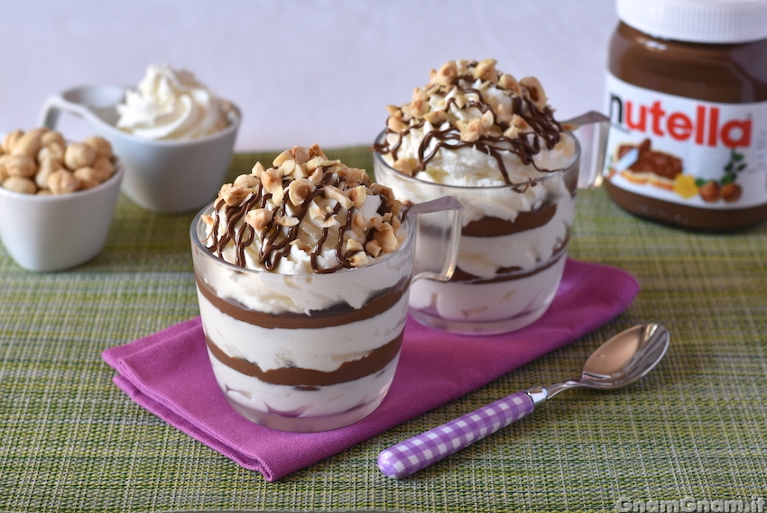
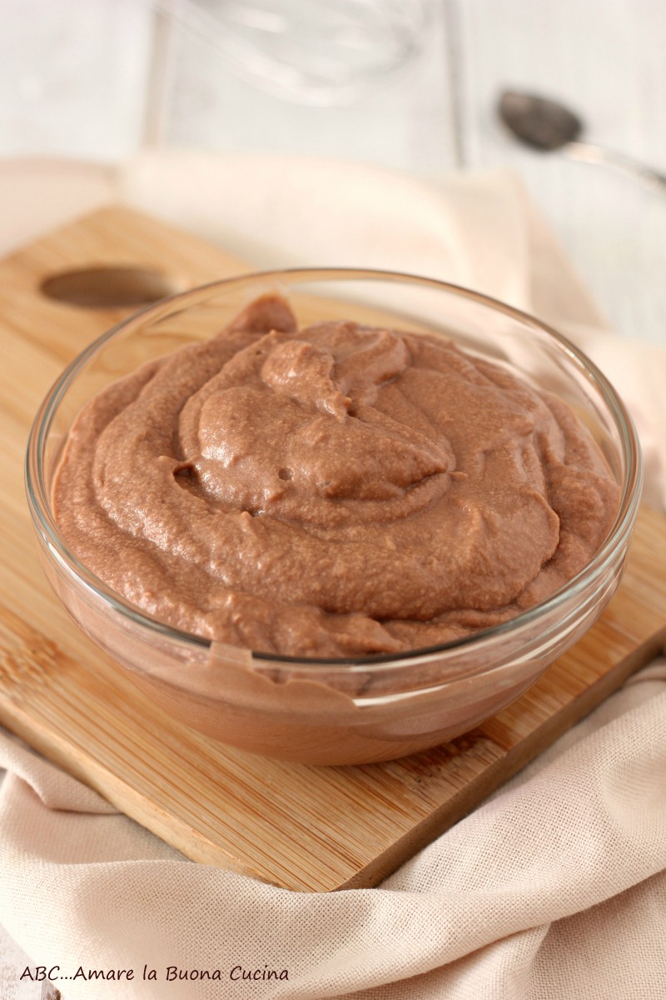
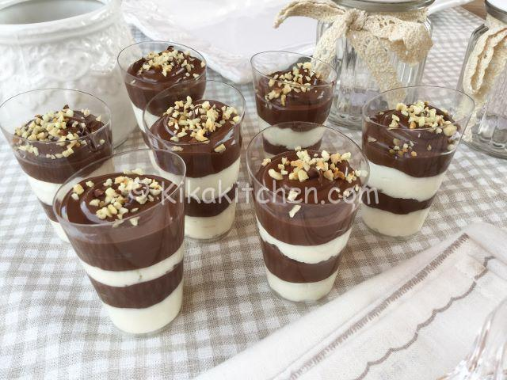

Non ho trovato una fonte che attribuisca con certezza queste preparazioni al Centro Italia. Le tre proposte sono quindi presentate come ricette italiane, senza assegnare loro un’origine regionale non verificata.
Impostazione
Struttura della ricetta
- Area di riferimento
- Ricette italiane La provenienza centro-italiana non è verificata.
- Servizio
- 4 bicchieri Le quantità a persona sono già calcolate.
- Tempi
- Da 5 a 25 minuti Una proposta richiede inoltre 2 ore in frigorifero.
- Difficoltà
- Facile Il livello riportato segue la fonte consultata.
Tre risultati verificati
Ricette pubblicate
Ogni scheda apre la preparazione corrispondente. Gli adattamenti di dose o presentazione sono sempre dichiarati.

Coppette mascarpone e Nutella
Mousse al mascarpone con strati di Nutella; i biscotti non fanno parte della ricetta base.
25 minutiTenere 2 ore in frigorifero.

Crema mascarpone e Nutella con cacao
Crema di mascarpone e Nutella, servita al cucchiaio con cacao amaro in superficie.
5 minutiConservare in frigorifero fino al servizio.

Bicchierini variegati mascarpone e Nutella
Crema al mascarpone e Nutella inserite nella stessa tasca per ottenere striature visibili.
20 minutiServire subito oppure tenere in frigorifero fino al servizio.
Coppette mascarpone e Nutella
Ricetta per quattro persone, servita in coppette e composta da mousse al mascarpone e strati di Nutella.
Niente biscotti nella lista base. La fonte li cita soltanto come aggiunta facoltativa.
Ingredienti
Attrezzi
- 2 ciotole
- Fruste elettriche
- Spatola
- 4 coppette
- Cucchiaio o tasca da pasticcere
Procedura
- 01
Lavora il mascarpone
Ingredienti: 250 g mascarpone, 60 g zucchero. Attrezzi: ciotola e fruste.
Amalgama mascarpone e zucchero fino a ottenere una base uniforme. La crema è pronta quando appare liscia e senza grumi visibili.
- 02
Incorpora la panna
Ingredienti: 200 ml panna montata. Attrezzi: fruste e spatola.
Monta la panna e incorporala alla base senza schiacciare il composto. La mousse deve rimanere soffice e sostenuta.
- 03
Componi le coppette
Ingredienti: mousse, 100 g Nutella, nocciole q.b. Attrezzi: coppette e cucchiaio o tasca.
Alterna mousse, Nutella e ancora mousse. Completa con poca Nutella e nocciole tritate; dal vetro devono distinguersi gli strati.
- 04
Fai riposare
Ingredienti: 4 coppette complete. Attrezzi: frigorifero.
Copri le coppette e lasciale riposare fino a quando la mousse è fredda e stabile.
Rapporto con la fonte. Ingredienti e quantità non sono stati cambiati; il procedimento è parafrasato.
Crema mascarpone e Nutella con cacao
La ricetta pubblicata usa soltanto mascarpone e Nutella. La fonte propone esplicitamente il cacao amaro in superficie.
Questa proposta rispetta la richiesta di una crema senza biscotti e con cacao sopra.
Ingredienti
Attrezzi
- Ciotola capiente
- Fruste o cucchiaio
- Pellicola
- 4 bicchieri
- Setaccino
Procedura
- 01
Rendi liscio il mascarpone
Ingredienti: 250 g mascarpone. Attrezzi: ciotola e fruste o cucchiaio.
Lavora il mascarpone finché perde i grumi e la superficie diventa uniforme.
- 02
Unisci la Nutella
Ingredienti: 100 g Nutella. Attrezzi: fruste o cucchiaio.
Aggiungi la Nutella e amalgama fino a quando non restano striature separate.
- 03
Servi nei bicchieri
Ingredienti: crema e cacao q.b. Attrezzi: 4 bicchieri e setaccino.
Distribuisci la crema nei bicchieri e forma un velo sottile di cacao amaro in superficie.
Rapporto con la fonte. Il cacao compare tra le finiture suggerite. Il servizio in quattro bicchieri è coerente con le quattro porzioni dichiarate.
Bicchierini variegati mascarpone e Nutella
La fonte descrive una variegatura ottenuta mettendo crema al mascarpone e Nutella nella stessa tasca da pasticcere.
Questa tecnica mantiene visibili zone chiare e scure senza mescolare completamente le due creme.
Ingredienti
Attrezzi
- Ciotola
- Fruste elettriche
- Spatola
- Tasca da pasticcere
- 4 bicchieri
Procedura
- 01
Monta la panna
Ingredienti: circa 57 ml panna fredda. Attrezzi: ciotola e fruste.
Monta la panna senza renderla eccessivamente ferma: deve mantenere una punta morbida.
- 02
Prepara la crema
Ingredienti: circa 36 g mascarpone e panna montata. Attrezzi: spatola.
Incorpora poco per volta il mascarpone con movimenti delicati fino a ottenere una crema densa e uniforme.
- 03
Crea la variegatura
Ingredienti: crema e circa 71 g Nutella. Attrezzi: tasca da pasticcere e bicchieri.
Inserisci crema e Nutella nella stessa tasca senza mescolarle del tutto, poi distribuisci: devono restare zone chiare e scure riconoscibili.
Rapporto con la fonte. Le dosi originali per 14 porzioni sono state ridotte matematicamente a quattro; i biscotti opzionali sono stati omessi.
Valori ricalcolati a persona
Analisi media degli ingredienti
La media usa solo le ricette in cui l’ingrediente compare. Le quantità “q.b.” non diventano numeri inventati. I valori sono stime editoriali, non indicazioni mediche personali.
Gli ingredienti sono ordinati dal livello di attenzione più alto al più basso, combinando allergeni, intolleranze e profilo infiammatorio. Il punteggio usato per l’ordinamento non è mostrato. Le frequenze sono stime prudenziali riferite alla quantità media a persona e al dessert completo.
| Ingrediente · quantità media | Cosa apporta | Profilo nutrizionale a persona | Consumo · volte/settimana | Allergeni e intolleranze | Profilo infiammatorio |
|---|---|---|---|---|---|
| NutellaRicetta ≈ 90,5 gA persona ≈ 22,6 gMedia delle 3 ricette | Dolcezza, cacao e nocciola; forma strati o variegatura. | Zuccheri ≈ 12,7 gSaturi ≈ 2,4 gEnergia ≈ 122 kcalGrassi ≈ 7 gProteine ≈ 1,4 gSodio ≈ 10 mg | 0,5–1 | Contiene nocciole, latte e soia; controllare il vasetto. | Da contestualizzare per zuccheri aggiunti e grassi saturi. |
| MascarponeRicetta ≈ 178,6 gA persona ≈ 44,6 gMedia delle 3 ricette | È la struttura cremosa principale. | Saturi ≈ 12–14 gGrassi ≈ 21 gEnergia ≈ 200 kcalProteine ≈ 3 gCarboidrati < 2 gSodio ≈ 40 mg | 0,5–1 | Contiene latte e lattosio salvo prodotto certificato. | Da contestualizzare per l’elevata quota di grassi saturi. |
| PannaRicetta ≈ 128,6 mlA persona ≈ 32,1 mlMedia delle 2 ricette | Rende la mousse più soffice e ariosa. | Saturi ≈ 7–8 gGrassi ≈ 11 gEnergia ≈ 108 kcalProteine ≈ 0,7 gCarboidrati ≈ 1,1 gSodio ≈ 11 mg | 1–2 | Contiene latte e lattosio. | La dose si somma ai grassi del mascarpone. |
| NoccioleRicetta q.b.A persona non calcolabilePresenti in 2 ricette | Aggiungono croccantezza, ma non sono indispensabili. | Non calcolabile senza dose | Non calcolabile | Frutta a guscio: allergene rilevante anche in piccole quantità. | Bassa attenzione nel normale contesto alimentare, senza promesse cliniche. |
| ZuccheroRicetta 60 gA persona 15 gPresente in 1 ricetta | Dolcifica la mousse della prima ricetta. | Zuccheri 15 gEnergia ≈ 60 kcalGrassi 0 gProteine 0 g | 0,5–1 | Nessuno dei 14 allergeni se il prodotto è puro. | Si somma agli zuccheri della crema spalmabile. |
| Cacao amaroRicetta q.b.A persona non calcolabileFinitura in 1 ricetta | Aggiunge amarezza e profumo alla superficie. | Non calcolabile senza dose | Non calcolabile | Non è uno dei 14 allergeni; verificare l’etichetta. | Dose troppo piccola per attribuire effetti clinici. |
Fonti consultate7 riferimenti
Le prime tre fonti sono ricette operative; le altre sostengono ingredienti confezionati, nutrizione e allergeni.
- GnamGnam — Coppette mascarpone e Nutella
Ricetta completa, fotografia, ingredienti, quattro porzioni, tempi e riposo.
- ABC… Amare la Buona Cucina — Crema mascarpone e Nutella
Due ingredienti, quattro porzioni, cinque minuti e cacao indicato tra le finiture.
- Kikakitchen — Bicchierini crema mascarpone e Nutella
Ricetta fotografata e tecnica variegata documentata. Il minuto riportato nei metadati della fonte non è stato ripreso.
- Nutella — scheda ufficiale
Ingredienti, allergeni e valori nutrizionali del prodotto confezionato.
- CREA — banca dati di composizione degli alimenti
Riferimento per le stime nutrizionali degli ingredienti generici.
- CREA Sapermangiare — porzioni e frequenze
Riferimento generale sulle porzioni di dolci al cucchiaio.
- Ministero della Salute — allergie alimentari
Riferimento per allergeni e controllo dell’etichetta.